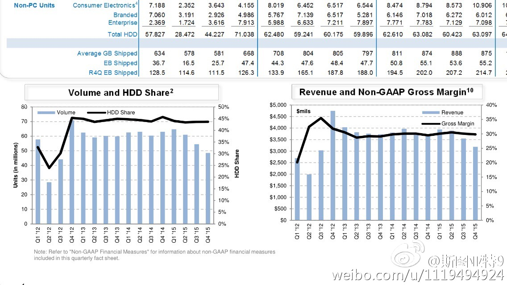
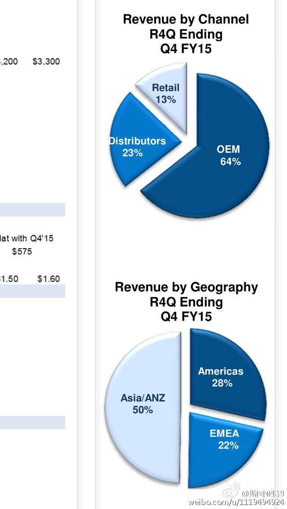
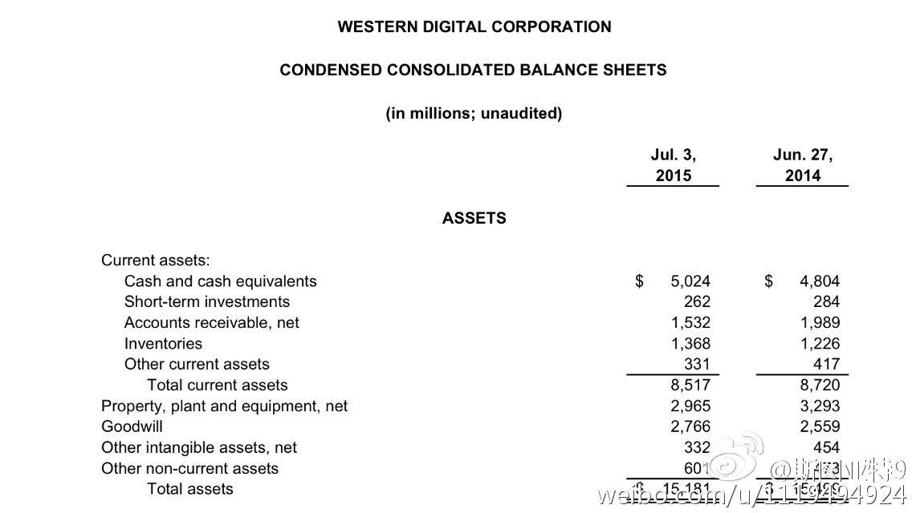
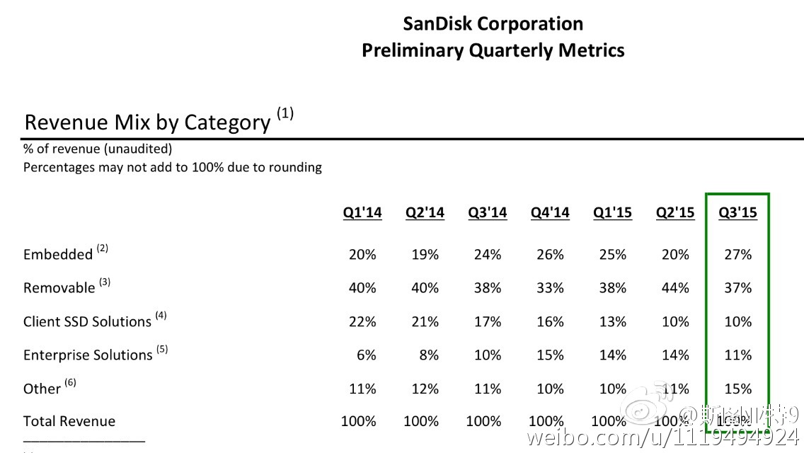

回复@陆离shiuwen:从财报上看西部数据超过一半的硬盘是卖给做台式机和笔记本的厂商。而这部分是个不断萎缩的市场，取而代之的是手机平板等设备，以及通过企业数据中心（云）提供的计算和存储。我猜想收购后的战略中心应该是这两块，尤其是企业这块有从闪存到硬盘的完整方案应该是很好的优势。插拔闪存应该不会是重心了。@斯图亚特9:为了收购Sandisk, 西部数据举债184亿美元（它市值只有199亿），如果紫光融资被批准则基本全现金收购，若不批准的话，五分之一要用自己的股票支付。开盘后sandisk股价远没有升到离收购价很近的价格，这是说明投资人对收购成功有疑虑？
为了收购Sandisk, 西部数据举债184亿美元（它市值只有199亿），如果紫光融资被批准则基本全现金收购，若不批准的话，五分之一要用自己的股票支付。开盘后sandisk股价远没有升到离收购价很近的价格，这是说明投资人对收购成功有疑虑？
看了看西部数据和Sandisk两个公司的财报。硬盘的销售量的确是在过去两个季度明显萎缩。Sandisk其实做企业级存储销售额只占全部销售额的11%。所以从某种程度来讲，两者合并大概对于Sandisk在企业SSD市场扩张有帮助的。另外财报显示西数全部资产150亿美元。收购的钱从哪搞的啊？ 
 美国·麦迪逊机场
美国·麦迪逊机场